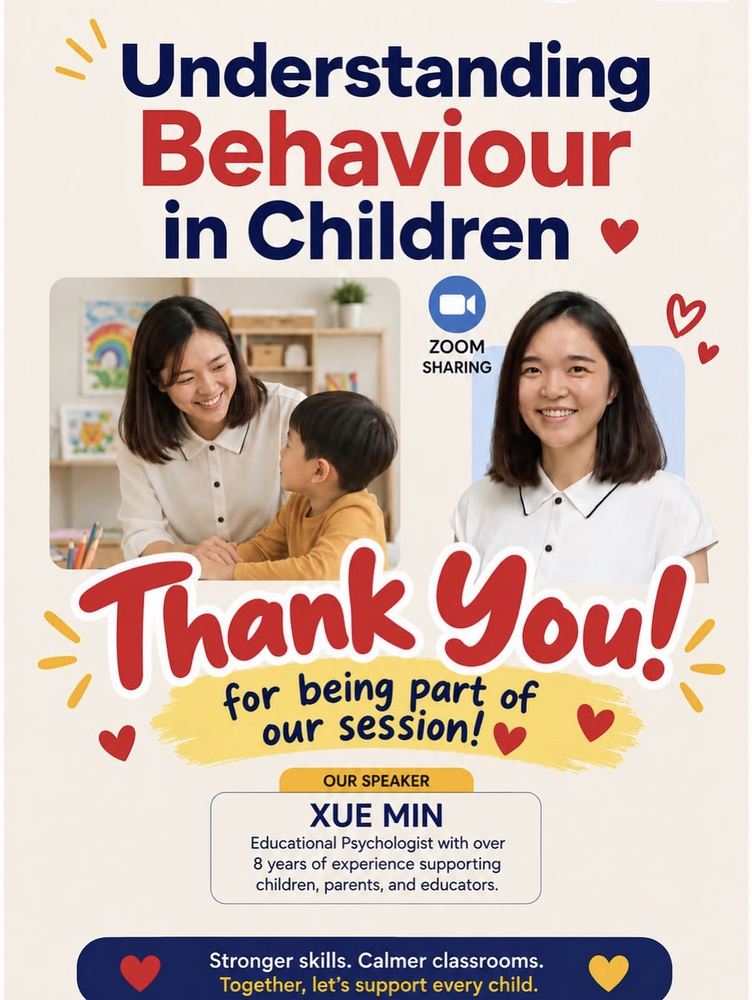

2026
Understanding Behaviour in Children
Growing Minds × ArtSense Studio
Invited to lead a professional development session for educators on the possible reasons behind children's behaviour, and on how teachers can respond more effectively and supportively.
Focus Child behaviour · Functions of behaviour · Emotional regulation · Classroom strategies
RoleSpeaker, Educational Psychologist

